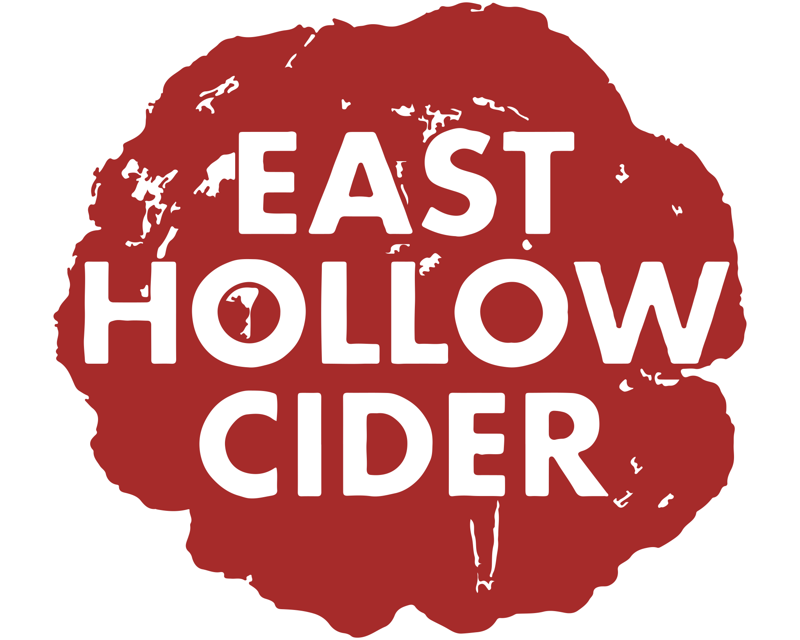
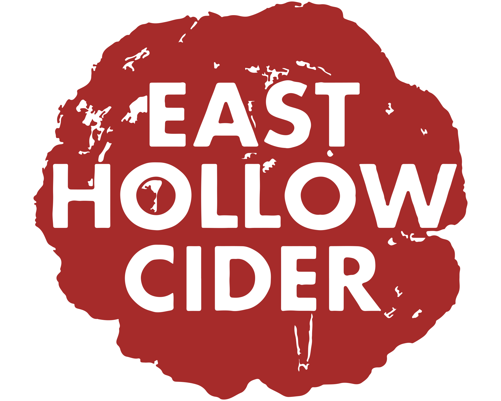

Dutchess County | Ulster County
229 Pitcher Ln, Red Hook, NY 12571
1802 NY-28, Woodstock, NY 12498
1000 Hurley Mountain Rd, Kingston, NY 12401
Ulster County
43 Baileys Gap Rd, Highland, NY 12528
341 Pancake Hollow Rd, Highland, NY 12528
Erie County | Niagara County
155 Chandler St, Buffalo, NY 14207
8503 Lower Lake Rd, Barker, NY 14012
Livingston County
5901 Big Tree Rd, Lakeville, NY 14480
Manhattan County | Tompkins County
349 5th Ave, New York, NY 10016
4491 Reynolds Rd, Trumansburg, NY 14886

Rockland County | Schoharie County
68 Sickletown Rd, Orangeburg, NY 10962
193 Stryker Rd, Gilboa, NY 12076
Rensselaer County
1297 Brookview Station Rd, Castleton-On-Hudson, NY 12033


 
